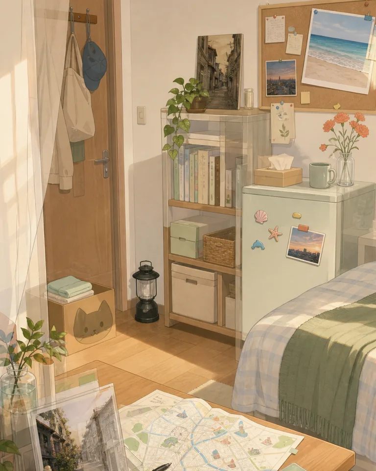

菜单
手机
证据
日志
设置

叙述
▼
两份生活记录并排摊开。
证据
最后选择
关闭
已确认
第五章
尚未形成最终记录。
日志
交互记录
关闭
已发生剧情
0 条
还没有新的交互记录。
‹
手机
•••
第五章
最后选择尚未确认
选择会记录在证据页和日志里。
查看最终记录
成就系统
结局成就
尚未解锁结局。
成就系统
联系人
新的好友申请
有 2 条待处理申请。
联系人
好友申请
2 条
值班中
Oops焦了
成就
0/4
‹ 成就列表
你确定吗？
返回
确认